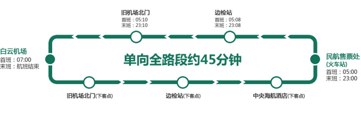

广州-白云国际机场服务指南
 机场平面图
机场地址
机场平面图
机场地址
广州白云国际机场位于广州市北部，白云区人和镇和花都区新华镇交界处，目前占地18平方公里。机场距离广州市中心约28公里。
主要设施
现有三条跑道，202个客机位、43个货机位（不含FBO）。1号航站楼总面积52.3万平方米，主楼共分四层，负一层则通往地铁及停车场，一层为到达及接送机大厅，二层为到达夹层，三层为出发及候机大厅。2018年4月26日投入使用的2号航站楼及综合交通中心总建筑面积88.07万平方米，航站楼分为四层，一层为到达厅、二层为国内出发到达混流区、三层为出发厅、四层为计时酒店、两舱休息室等。
机场交通
 公交汽车
公交汽车
 市区大巴/机场快线
市区大巴/机场快线
白云国际机场为方便旅客来回机场与市区，开辟了5条空港快线和6条机场快线运送旅客。
市区大巴途经市内各大酒店、大型广场以及交通枢纽地，如花园酒店、粤海酒店、威尔登酒店、珠江大酒店、中信广场、海珠广场、天河客运站、广州北站等等。
市区大巴价格合理且十分舒适，更重要的是充分考虑到乘机旅客的特点，针对性的开辟直达各大酒店、广场和交通枢纽地的往返路线。十条线路平均20-30分钟一班车，以高密度车次和贴心的服务为旅客的出行提供了便捷的交通服务，极大地节省了旅客的出行时间。
空港快线一号线行车示意图【每20分钟一班】

| 站点 | 具体位置 | 接驳公共交通 |
|---|---|---|
| 旧机场北门 | 位于民航医院北侧临近机场高速入口处 | 244、251、254、268、280、509、510、511、523、810、807、886等 |
| 中央海航酒店 | 临近中医学院三元里大酒店 | 24、38、58、87、101、103、105、113、124、181、182、185、186、187、244、251、254、257、265、273、280、284、523、555、805、886等，地铁三元里站 |
| 边检站 | 临近民航学院，建发广场 | - |
| 民航售票处（火车站） | 位于广州火车站东面民航售票大楼处 | 7、38、111、180、181、251、273等，旁边是广州火车站，省汽车客运站，地铁火车站 |
空港快线二号A线行车示意图【发车间隔30-45分钟一班】

注：白云机场发车时间：07:00-19:00每45分钟一班，19:00-01:00每30分钟一班。广州中心皇冠假日酒店发车时间：05:30-06:30,20:00-21:10每30分钟一班，06:30-20:00每45分钟一班。
| 站点 | 具体位置 | 接驳公共交通 |
|---|---|---|
| 旧机场北门 | 位于民航医院北侧临近机场高速入口处 | 244、251、254、268、280、509、510、511、523、810、807、886等 |
| 边检站 | 临近民航学院,建发广场 | - |
| 花园酒店 | 越秀区环市东路368号 | 6、30、189、191、201、210、219、220、225、233、234、242、256、269、271、272、278、280、282、290、522、545、549、550、561、810、862、886等 |
| 文化假日酒店 | 越秀区环市东华侨新村光路28号 | - |
| 广州中心皇冠假日酒店 | 越秀区环市东路339号 | - |
 出租车
出租车
出租车的运营时间是从当日首班航班起航到最后一班航班降落为止，周末、节假日无休。
在内排国际机场内运营的出租车都需要满足：
（1）登记之日起，运营年限不得超过6年
（2）支持POS支付方式，方便旅客付款。计费仪表保持正常状态，确保计算收费时的真实准确。
（3）确保车辆内卫生干净整洁和确保驾驶技术安全。
非特许经营的出租车业务只允许前往机场，不准许在机场范围内（大堂出口、港口出口、汽车站）等待和接载客人离开机场。
 电瓶车
电瓶车
电瓶车河内内排国际机场的T1和T2航站楼的停车场内及Vo Van Kiet的提供客运服务。电动列车有助于在两个终端之间运输乘客，从摩托车站到车站、从客运站到车站、从公交车站到该区域单位的办公室均有车辆前往，是河内内排国际机场内部便捷的交通运输选择。
 停车服务
停车服务
不规则停放车辆的停车场收费按实际使用自动化系统的时间收费（含增值税，收费按照中国民用航空总局航空保安计划覆盖停车场停车场和安全观察，但不包括安全服务车辆）如下：
| 内容 | 单位 | 价格（VND） | |
|---|---|---|---|
| 前60分钟 | 之后每30分钟 | ||
| 汽车9个座位，卡车到1.5吨 | 越南盾/时间/汽车 | 15000 | 5000 |
| 汽车从10到16个座位，皮卡车，卡车从1.5吨到3.5吨 | 越南盾/时间/汽车 | 20000 | 5000 |
| 汽车从17到29个座位，卡车从3.5到7吨 | 越南盾/时间/汽车 | 30000 | 10000 |
| 30座以上的汽车，7吨以上的卡车，拖车，集装箱卡车 | 越南盾/时间/汽车 | 40000 | 15000 |
| 兑换控制卡（万一丢失卡） | VND /卡 | 200000 | |
紧急电话
接收和解答乘客信息
国际乘客终端：（84）04.3587.6611（24/24小时）/ （84）04.3587.6612
乘客终端国内： （84）04.3584.3004
质量服务
热线：（ + 84）01689.166.566
电子邮件：c sc-secretariat@googlegroups.com
在服务业务协调单位
热线电话：（+84）096.741.5656 / （+84）096.464.8811
电子邮件：trucbantruongnoibai@gmail.com
航空保安
热线： （84）04.3584.2627 /（84）091.432.8381
警察GATE
热线： （+84）04.3886.5542 /（+84）098.884.0505
电子邮件：cacknoibai@gmail.com
消防和
限制限制： （+84）04.3587.6610
保健
免费： （+84）04.3587.6601 /（+ 84）04.3587.6600
OFFICE处理，任用工作进度
电话：（+84）04.3886.5047
电子邮件1：vtnoibai@vietnamairport.vn
电子邮件2：noibaioffice@vietnamairport.vn